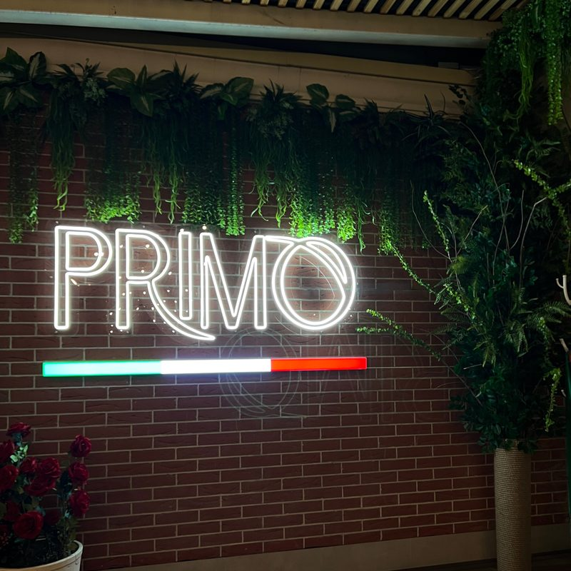
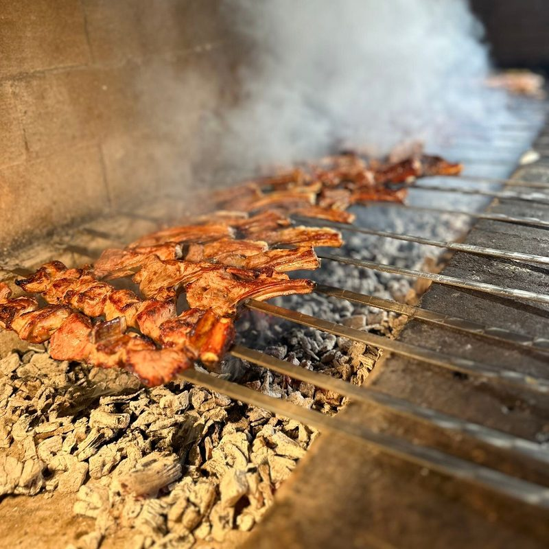
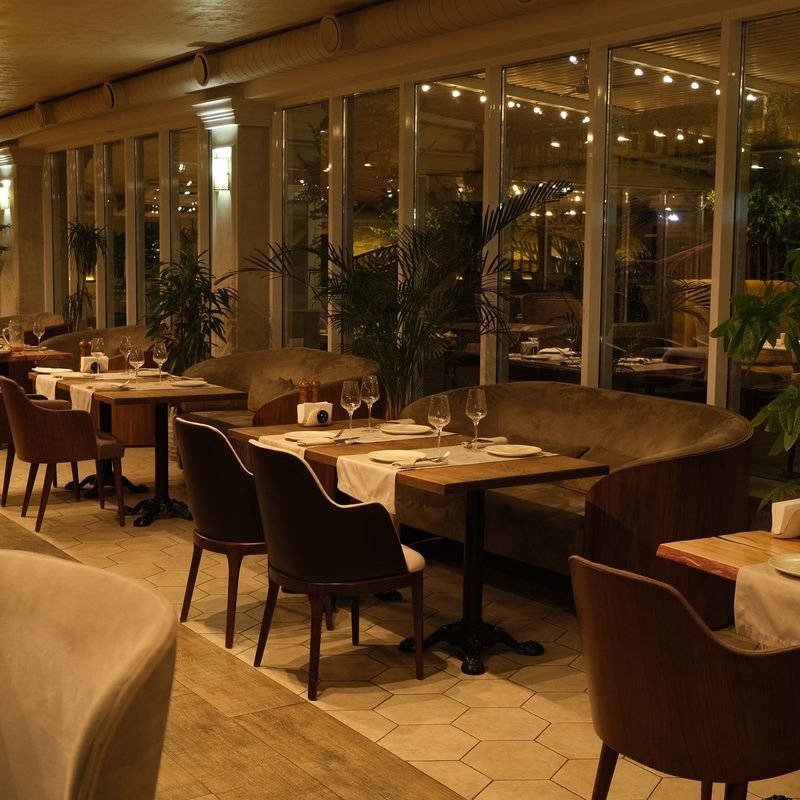
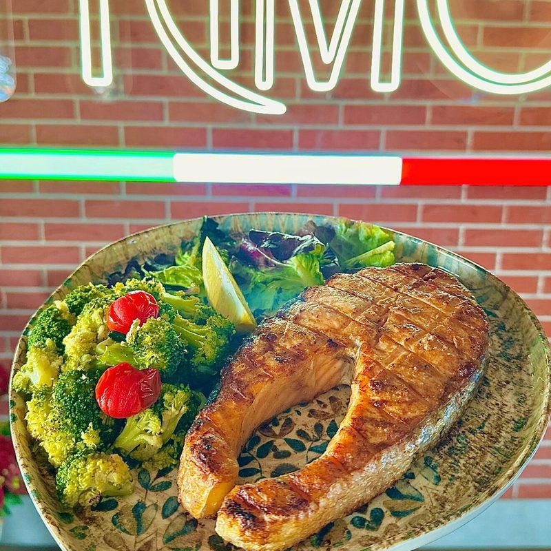
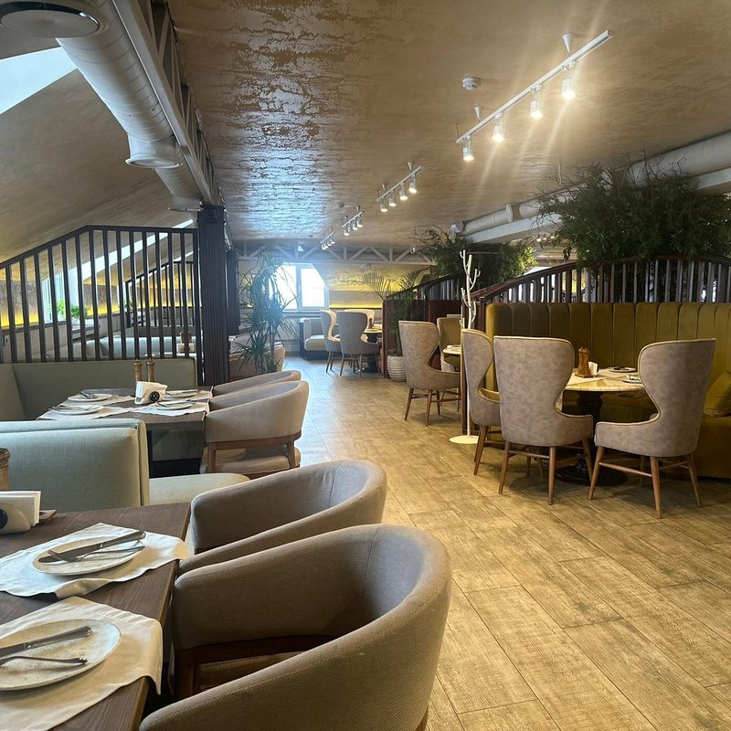
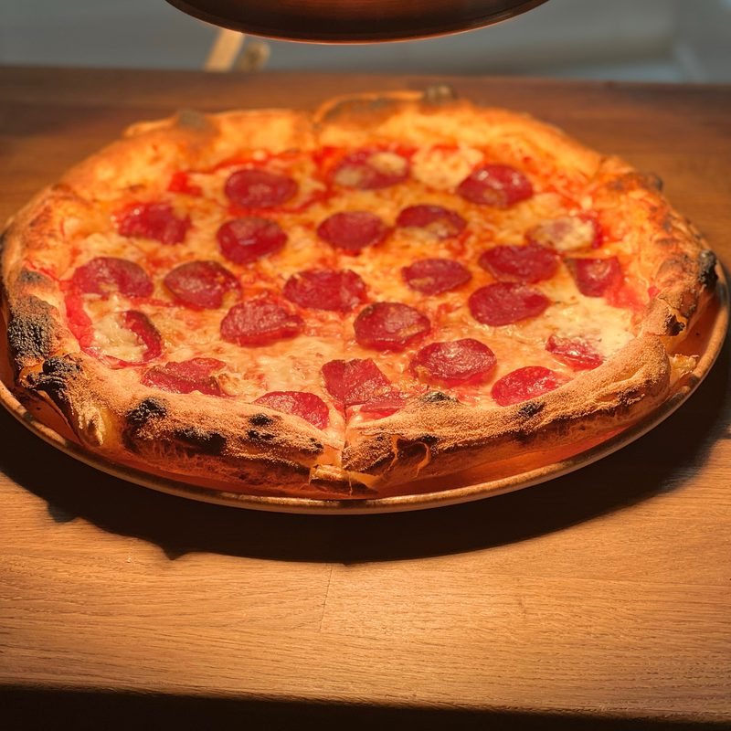

Primo ресторан кавказской и итальянской кухни
Мясо на углях, стейки, паста и пицца. Халяль.
Адрес и часы
Назрань, Насыр-Кортский округ, улица Муталиева, 68
- Ежедневно11:00–23:00
- Средний счёт — от 2 000 ₽
- Халяль, есть намазхана
- Летняя и зимняя веранды
- Детская комната и детское меню
- Банкеты, свадьбы, дни рождения и корпоративы
- Доставка, бизнес-ланч, бесплатная парковка